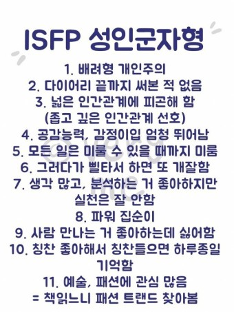

Chang Jeong keun
자기소개
목 차
이름, 학번, 학과, 사는 곳
성격
취미
게임
축구
좋아하는 축구선수
이름, 학번, 학과, 사는 곳
이름:장정근
학번, 학과, 사는곳: 18학번, 컴퓨터공학과, 경기도 안산시 거주
성격
성격: 굉장히 낯을 가리는 성격이고 내향적이며 집에 나가는 것을 선호하지 않음. 새로운 사람과 친해지기가 굉장히 어려움. 하지만 친해지면 말도 많아지고 활발해짐
취미
취미: 집에서 넷플릭스로 영화나 드라마 보기. 축구 하거나 축구 보는 것. 게임 하기
MBTI
MBTI: ISFP

게임
게임: 게임 하는 것을 매우 좋아하며 리그 오브 레전드라는 게임을 즐겨했었고 요즘에는 피파온라인4에 빠져서 재미있게 즐기고 있다.
축구
축구: 축구를 예전부터 하는 것도 좋아하고 보는 것도 좋아했음. 해외축구를 즐겨보고 좋아하는 팀은 토트넘이다. 제일 좋아하는 선수는 루이스 수아레스라는 선수이다. 위에 영상은 수아레스에 빠지게 된 영상이다.